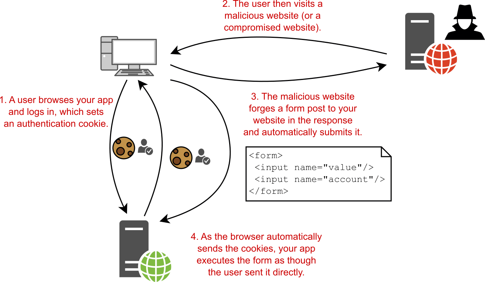
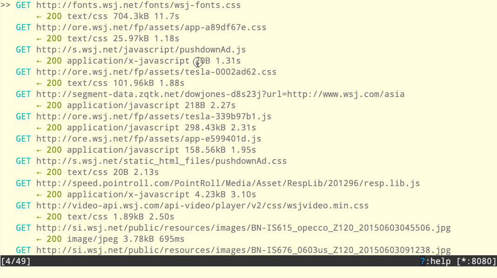

De firma Netnoobs doet nog eens beroep op jullie expertise. Ze hebben een paar websites:
www.netnoobs.be (voor de externe website)
bestelling.netnoobs.be (voor hun intern bestellingensysteem)
Welk type certificaat zou je hun aanraden?
Geef een indicatie wat dit hen zou kunnen kosten.
Genereer een "certificate signing request" om dit certificaat te kunnen aanmaken.
Geëncrypteerd verkeer in Wireshark
Statelessness
Voordeel: eenvoudiger protocol
Cookies
protocol zelf bevat geen implementatie statecookies: later uitgevonden
past binnen trend om voort te bouwen op eenvoudigere basis
typisch 4 componenten
cookie header in request naar geassocieerde website
cookie header in response
cookie zelf (bestandje in browser)
databasetabel (als server iets moet "onthouden")
Nadelen
privacy (tracking cookies specifiek, zelfs voor developers niet a priori duidelijk)
security (bestandje dat bv. een login voorstelt, kan gestolen worden)
// ongewone schrijfwijze
let allCookies = document.cookie; // "a=b;c=d;e=f"
document.cookie = "g=h"; // stelt één cookie in
Regel om cookie in te stellen vertaalt dus naar één Set-Cookie header in response per
keer dat we dit gebruiken.
max-age is vanzelfsprekend
Secure = vereist HTTPS
HttpOnly = niet toegankelijk met JS =/= enkel gewone HTTP! (tegen XSS)
let op: kan nog steeds cookie gewoon kopiëren van iemands PC als ik toegang heb...

voorbeeld CSRF
"cross-site" = interactie tussen twee websites (via link, frame,...)
ter verduidelijking: hoeft geen "phishing" te zijn
moet de andere site gewoon bezoeken bij slechte security settings
andere site kan JS bevatten met een fetch
die fetch wordt door jouw PC uitgevoerd
SameSite
none
cookie wordt bij elk verzoek naar de bronwebsite verstuurd, ook als het verzoek
getriggerd is door een andere website
lax
cookie zal verstuurd worden (enkel met request voor het geassocieerde domein) in geval van
expliciete actie
strict
cookie zal voor geen enkel cross-site verzoek verstuurd worden
None is enkel toegelaten met HTTPS, vermindert risico maar schakelt het niet volledig uit.
Voorbeeld risico met none: JS op andere website die je bezoekt doet een fetch van de
bronwebsite maar stuurt slechte gegevens mee. Je sessiecookie wordt mee verstuurd met die slechte
gegevens...
Verklaar:
Session cookie
Persistent cookie
First-party cookie
Third-party cookie
Zombie cookie
Tracking cookie
incognito mode
Niet "geen cookies", maar "geen persistente cookies".
Niet gelinkt aan HTTP, access via JS. Ander toepassingsgebied.
www.ap.be
Welke cookies worden hier ingesteld? Hoe zie je dit?
amiunqiue.orgTracking zonder cookies, op basis van info die de browser ter
beschikking stelt.
Caching
Al meegemaakt? Oude content, refresh lost probleem op.
"goede" man in the middle
bespaart bandbreedte (als zelfde sites regelmatig gebruikt worden)
kan extra beveiligen
kan surfgedrag werknemers beperken / monitoren
gebruik TLS vereist installatie extra certificaat
verwant aan VPN, maar focus ligt op caching vs. privacy
soms beperkt tot enkel HTTP, maar bestaan variaties op het concept

Lijkt op eerste zicht wat op Wireshark
Securitytool, focus van andere proxy's kan anders zijn
Kan berichten onderscheppen en aanpassen
Kan hem zelf scripten (dus automatisch berichten aanpassen)
Na installatie certificaat ook bruikbaar voor HTTPS
Installeer mitmproxy
klik desnoods op "meer info" zodat Windows toelaat te installeren
Run in Windows Terminal het commando mitmproxy
Run in een tweede terminal: curl --proxy localhost:8080 neverssl.com
Wat zie je in je terminalvenster?
Stop het commando mitmproxy
Bekijk het tutorialfilmpje op deze
pagina
start het commando mitmweb
dit start de (grafische) webversie
Stel via "start" → "intercept" een filter in die responses tegenhoudt
Navigeer met curl naar http://wttr.in/Antwerpen
Ga na dat je het request ziet in MITMWeb
Pas het weerbericht aan dat de ontvanger te zien krijgt
Laat het gewijzigde antwoord versturen
Zie je het aangepaste weerbericht in de terminal?
Herstel je settings zodat je browser geen uitgaande proxy meer gebruikt.
Een reverse proxy zit aan ontvangerkant.
Lees de tekst tot en met "Listen port" op deze pagina
Zorg dat HTTP-verkeer naar localhost:8080 wordt omgeleid naar neverssl.com
Configureer de reverse proxy om requests te onderscheppen.
Stuur een request naar localhost:8080 met curl (zonder --proxy in het commando!). Zie je iets in je MITM venster?
Wat gebeurt er als je rechtstreeks naar http://neverssl.com gaat met curl?
Kan inkomend verkeer groeperen
Kan inspecteren en redirecten
Voorbeeld: ik heb een VPS, meerdere domeinnamen voor verschillende websites, wil user
niet dwingen poortnummer in te vullen.
Kan gebruikt worden om "gewone" web servers van TLS te voorzien
MITM proxy doet dit niet in alle verwachte scenario's, maar in principe kan redirect
terug naar localhost,...
Stel mitmproxy in als proxy voor je systeem.
Gebruik het Windows menu, vul in "proxy"
Open het instellingenvenster dat daar getoond wordt
Het adres is localhost
De poort is 80
Zorg dat mitmproxy actief is
Surf naar www.ap.be
Verklaar wat je ziet op basis vorige les
Ga terug naar je oude proxy settings.
Zoek op de site van mitmproxy hoe je hun certificaat kan installeren en doe dit.
Stel localhost:8080 opnieuw in als proxy.
Start mitmproxy terug op.
Surf naar https://www.w3schools.com/html/html_forms.asp
Vul het formulier in.
Inspecteer de flow door op een van de verzoeken te klikken.
Wat zegt dit over proxy's en TLS?
Kan de session key bijhouden en importeren in Wireshark, zodat pakketten ook daar geïnspecteerd
kunnen worden.
Examon misleiden
Eigen belang: dit kan, maar je uitvoering moet perfect zijn.
Zou eerst data moeten verzamelen en versies wijzigen regelmatig.
Doorzoek de slides en de informatie over MITMproxy en stel een aanvalsplan voor.
Tips:
Examon gebruikt een API, aangeboden over HTTPS
Af en toe een bericht met het tijdstip.
Af en toe een bericht met systeeminformatie en een screenshot.
Binaire data: base64 formaat
Wat zou Examon kunnen doen om dit te verhinderen?
Short-lived certificaat in de client kan afbeeldingen ondertekenen.